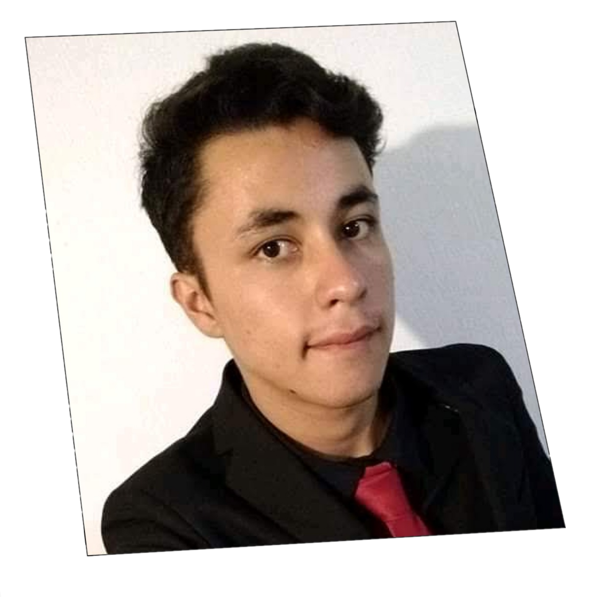
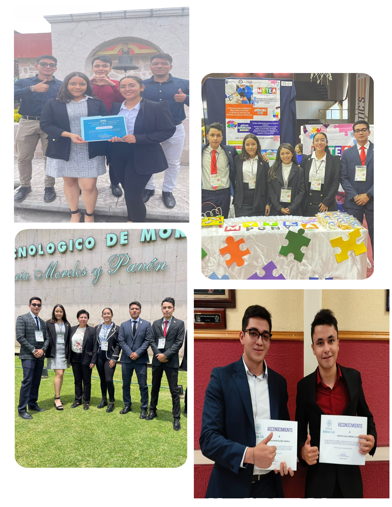
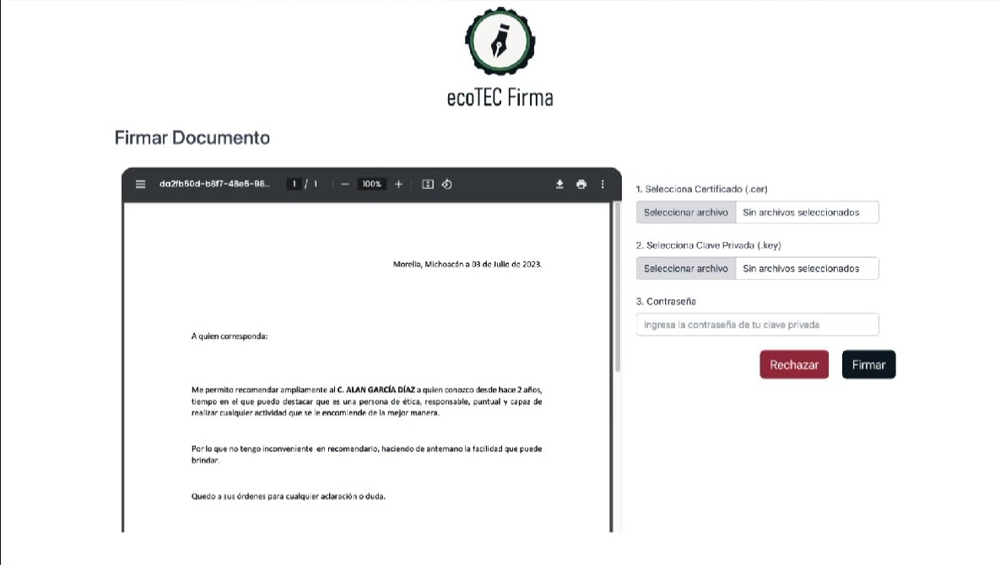
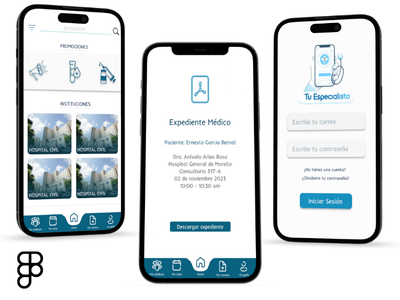
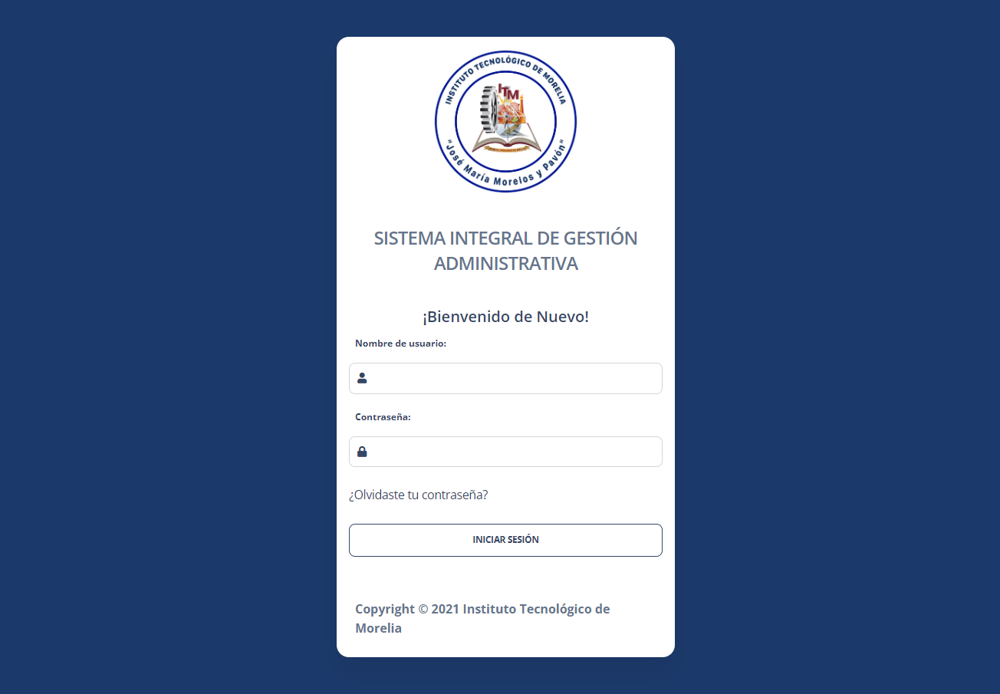
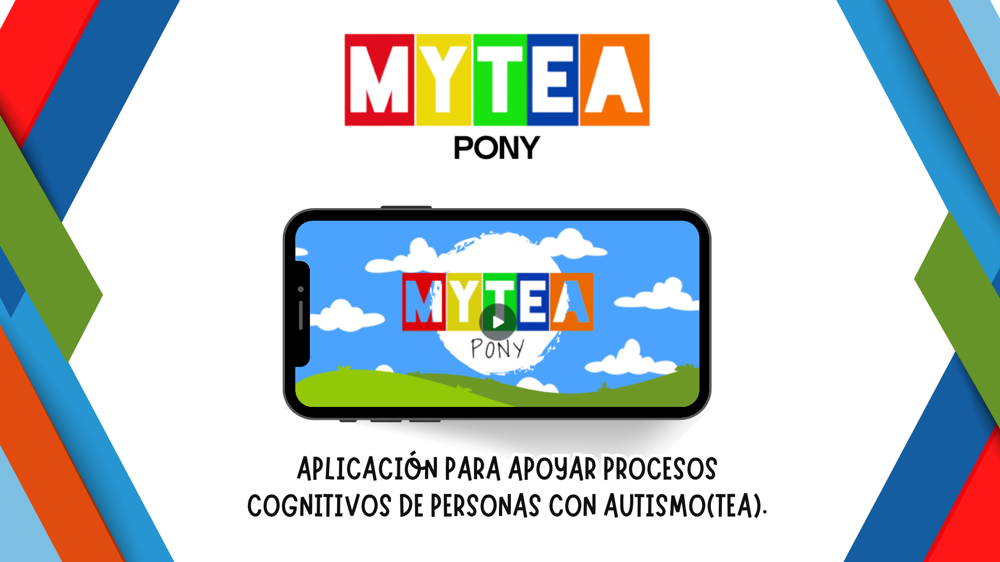
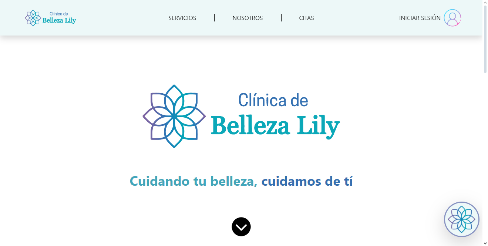

Ingeniero en Desarrollo de Software
Hola, soy Carlos Alan Jiménez Guzmán
Experiencia en Back-end y Front-end Developer, con enfoque en la resolución lógica de problemas.

Ingeniero en Desarrollo de Software


Mi nombre es Carlos Alan Jiménez Guzmán, nací el 16 de marzo de 1999 en Morelia, Michoacán.
Soy Ingeniero en Sistemas Computacionales con especialidad en Software. Tengo habilidad para la resolución de problemas de manera lógica y, aunque me parece más atractiva la parte del Back-end, he practicado Front-end con diferentes herramientas como se muestra en mi CV.
Una selección de proyectos en los que he participado, entre desarrollo, arquitectura y gestión.
Aplicación para la firma digital de documentos del ITMorelia.
EcoTec Firmas es una aplicación pensada para evitar el uso de papel y firmar documentos importantes con la E-Firma del usuario.
Aunque esta aplicación aún no se ha subido a producción, mi participación fue activa, apoyando tanto en el front-end como en el back-end.

Aplicación móvil de expediente clínico electrónico para médicos y pacientes. Permite tener tu información médica en la palma de tu mano y agendar citas con el especialista que decidas.
Tuvimos alrededor de 5 días para completarlo; nuestra tarea fue únicamente de Front-end, ya que el back-end estaba finalizado.

Aplicación para la gestión de trámites de estudiantes de la división de estudios profesionales del ITMorelia.
Con el objetivo de estandarizar las aplicaciones dentro del ITMorelia, se están integrando todas dentro de SIGA para resolver problemáticas y hacerlo más escalable.
Mi participación fue agregar nueva funcionalidad y resolver bugs. Actualmente está en producción.
Visitar SIGA
Aplicación para apoyar procesos cognitivos de personas con autismo (TEA).
Apoya el bienestar emocional y el desarrollo cognitivo, brindando a profesionales de la salud mental y a sus pacientes con TEA una herramienta efectiva y personalizada.
Se utilizó metodología SCRUM. Participé en el desarrollo directo, el modelado de la base de datos y el back-end.

Aplicación para la gestión de citas para la clínica de belleza Lily.
Diseñada para promocionar tratamientos, promociones y agendar citas, además de registrar usuarios para ofrecerles beneficios.
No participé en el desarrollo directo, pero contribuí significativamente en las revisiones en mi rol como SCRUM Master. Actualmente está en producción.
